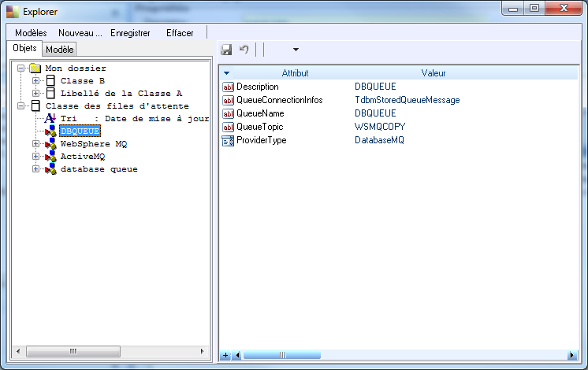
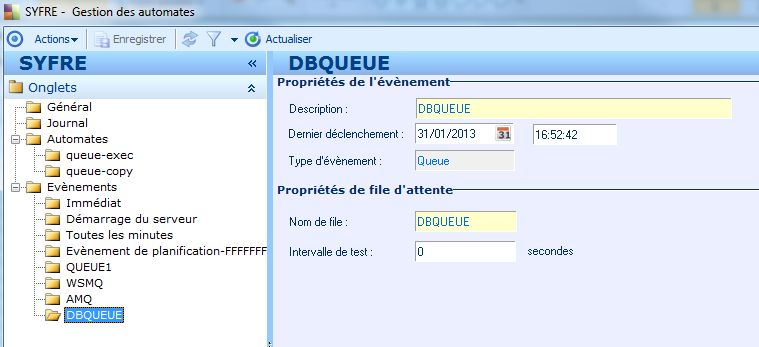
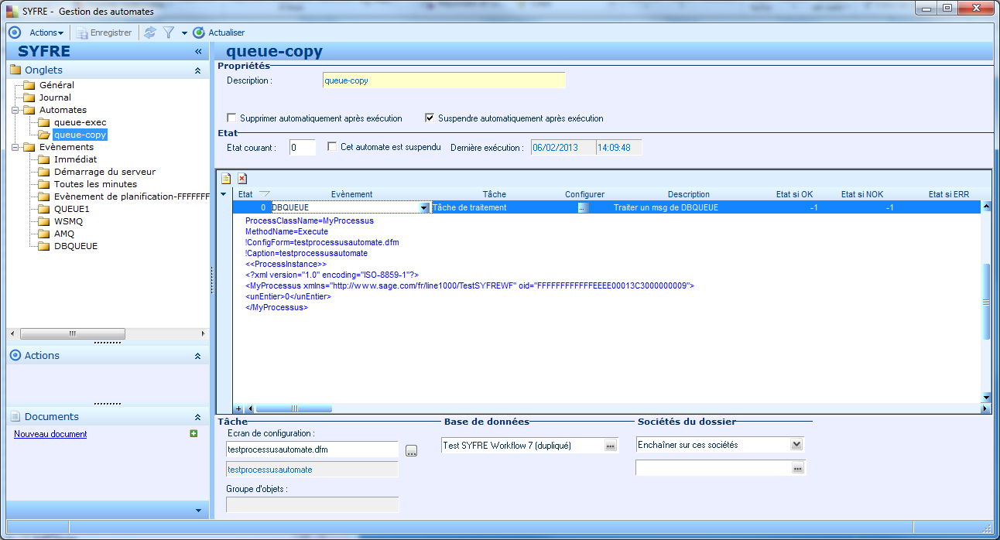
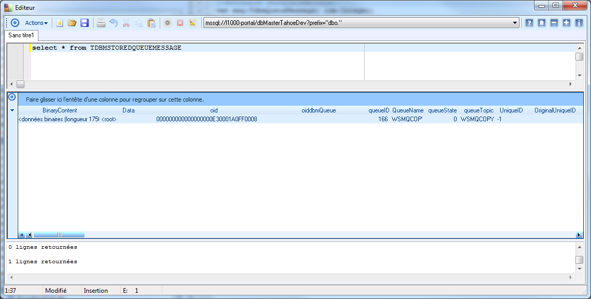
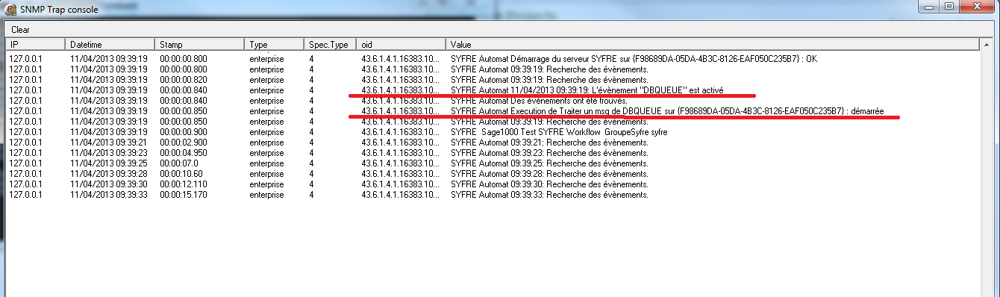
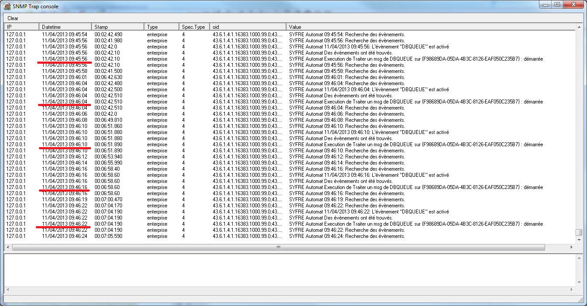
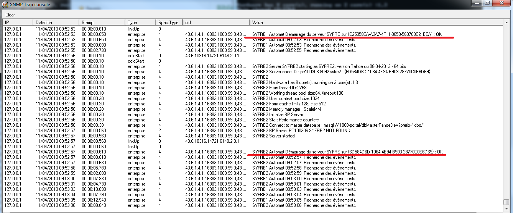
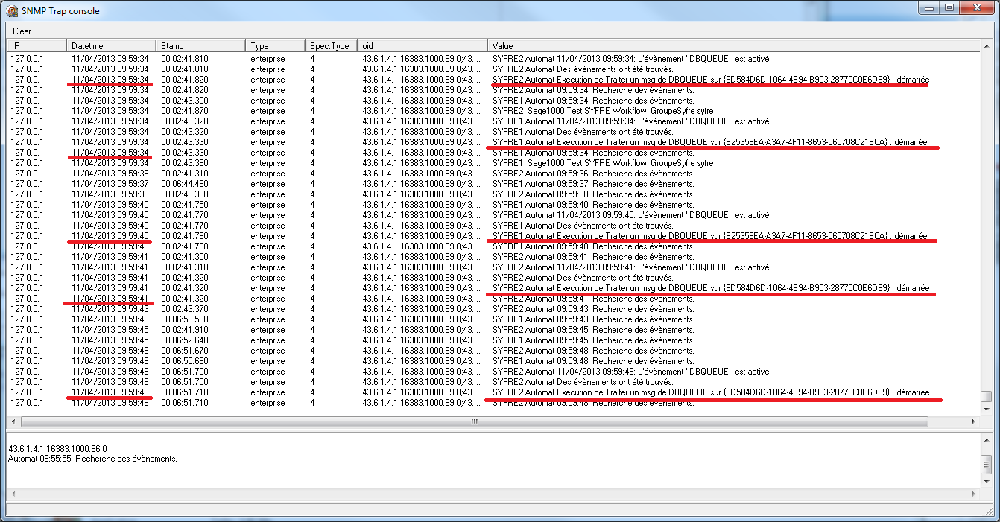

Exemple File d'attente avec un automate
Sommaire |
Dans cet exemple nous allons mettre en oeuvre le design pattern file d'attente en utilisant :
- Une file d'attente stockée dans la base de données
- Un code script pour générer les messages (producteur)
- Un automate pour consommer les messages de cette file d'attente (consommateur)
- Un processus de traitement pour traiter les messages
Configuration de la file d'attente
La file d'attente est configurée par un objet TdbmQueue du référentiel:

- Le nom de paramétrage de la file est DBQUEUE
- Le type de la file est DatabaseMQ ce qui indique qu'il s'agit d'une file gérée en base de données
- L'attribut QueueConnextionInfos indique le nom de la classe dans laquelle seront stockés les messages, il s'agit de la classe générique permettant de stocker n'importe quel message.
| Tip : Le topic associé à la queue permet de filtrer les objets de classe. Seul les objets ayant ce topic seront pris en compte, la classe peut donc être partagée par plusieurs files. |
| Tip : Cet exemple fonctionnerait identiquement avec une file d'attente WebSphereMQ ou ActiveMQ en changeant uniquement cet objet de configuration. |
Code snippet du producteur
Le code générant un message dans la file est le suivant :
//Procedure TestQueueMessage; var msg:TdbmQueueMessage; idx:Integer; begin for idx:=1 to 1 do begin msg := TdbmQueueMessage.Create; msg.QueueName := 'DBQUEUE'; msg.AddParameter('uneChaine','some text'); msg.AddParameter('unEntier',1999); msg.BinaryContent.LoadFromFile('c:\image.jpg'); msg.Post; end; end;
Il peut être directement exécuté à partir du concepteur de modèle.
Notez que :
- Ce code ne connait pas la configuration de la file, il peut fonctionner avec n'importe quel type de file.
- Il ne fait pas référence à TdbmStoredQueueMessage (ce qui serait propre à la configuration de la file) mais à TdbmQueueMessage qui est un type non persistant générique représentant un message.
- Il écrit le message en base par un Post sur le message, c'est une action générique indépendante du type de la file.
- Le message contient deux paramètres et un contenu binaire
- Il n y a pas besoin de déclarer une transaction.
Code snippet du processus de traitement
La classe traitant les messages est la suivante :
unit TestSYFREWF; interface Type MyProcessus = Class(TitObject) public uneChaine: string; unEntier: integer; Procedure Execute; end; Implementation {MyProcessus} Procedure MyProcessus.Execute; //Procedure Execute; var aMsg:TdbmQueueMessage; idx:Integer; begin if Assigned(UserContext.TaskContext) then begin UserContext.TaskContext.AddMessage('MyProcessus.Execute'); if Assigned(UserContext.TaskContext.EventContext.receivedMsg) then begin aMsg := UserContext.TaskContext.EventContext.receivedMsg; UserContext.TaskContext.AddMessage('Has a message'); for idx:=0 to aMsg.Count-1 do begin UserContext.TaskContext.AddMessage(aMsg.DisplayStrings[idx]); end; // simulate job sleep(5000); end else UserContext.TaskContext.AddMessage('No message'); end else showMessage('not in a task'); end;; end.
Ce processus réalise :
- Vérifie qu'il s'exécute bien dans le contexte du tâche
- Trace dans les messages du contexte son exécution
- Récupère le message consommé (aMsg)
- Trace tous les paramètres du message dans messages du contexte
- Simule l'exécution d'un traitement.
Le processus sera exécuté par la tâche d'automate consommant les messages.
Configuration de la tâche d'automate
Evènement :

- L'évènement référence la file d'attente par son nom de paramétrage (DBQUEUE)
- L'intervalle de test est zéro ce qui indique qu'il ni a pas de délai entre les différents tests de cet évènement.
| Tip : Le délai entre chaque test sera conditionné par le délai de boucle configuré sur le serveur d'automate. |
Tâche :

Cet automate est configuré ainsi :
- L'évènement est de type File d'attente
- La tâche est de type traitement
- Les paramètres de la tâche référence le processus MyProcessus
- L'état suivant est -1
Exécution
Exécution du code producteur :

- On constate que ce code a créé un objet dans la classe TdbmStoredQueueMessage.
- Les paramètres du message sont stockés dans l'attribut Data
- Le contenu binaire est stocké dans l'attribut BinaryContent
Démarrage de l'automate :
On utilise une console SNMTP pour superviser l'exécution :

On constate que
- l'évènement DBQUEUE est déclenché.
- L'exécution de la tâche de traitement est réalisé.
La tâche de traitement génère une entrée dans le journal :
Tâche : Tâche de traitement Traiter un msg de DBQUEUE Société : Test SYFRE Workflow Utilisateur: syfre Base(s) : TestWorkFlowdup_7 Mode Soc. : Enchainer sur ces sociétés Société(s) : Début : 11/04/2013 09:39:19 Fin : 11/04/2013 09:39:24 Durée : 5 s Fichiers : 0 Statut : 0 OK MyProcessus.Execute Has a message MessageClassName="TStaticRegClass" MessageDatetime="11/04/2013" MessageUser="syfre" MessageOID="000000000000000000E30001A0FF0008" MessageID="166" Topic="WSMQCOPY" State="1" OriginalUniqueID="" idOTP="227" ObjectClassLabel="Classe message stocké d'une file d'attente" ObjectClassName="TDBMSTOREDQUEUEMESSAGE" oid="000000000000000000E30001A0FF0008" oiddbmQueue="" oidShare="" QueueName="WSMQCOPY" queueTopic="WSMQCOPY" ShareInfo="" ShareInstanceInfo="" ShareInstanceLevel="2" ShareInstanceRequestedLevel="-1" ShareLevel="0" UniqueID="166" UpdDate="11/04/2013" UpdStamp="00017D6100000022" UpdUser="syfre" uneChaine="some text" unEntier="1999"
| Tip : Après exécution le message a été supprimé de la table TdbmStoredQueueMessage |
Production de plusieurs messages
On peut modifier le code du producteur pour générer plusieurs messages :
//Procedure TestQueueMessage; var msg:TdbmQueueMessage; idx:Integer; begin for idx:=1 to 5 do begin msg := TdbmQueueMessage.Create; msg.QueueName := 'DBQUEUE'; msg.AddParameter('uneChaine','some text'); msg.AddParameter('unEntier',1999); msg.BinaryContent.LoadFromFile('c:\image.jpg'); msg.Post; end; end;
On constate les déclenchements de l'automate :

Chaque déclenchement est espacé d'environ 5 secondes qui correspondes au temps de traitement du processus.
Utilisation de plusieurs consommateurs
Il est possible de démarrer plusieurs services sur le même automate pour mettre en oeuvre plusieurs consommateurs :
[\SOFTWARE\Sage\Ligne 1000\Administration\IPC\SYFRE1] ipcMode=ipcTCP tcpPort=8091 section=SYFRE [\SOFTWARE\Sage\Ligne 1000\Administration\IPC\SYFRE2] ipcMode=ipcTCP tcpPort=8092 section=SYFRE [\SOFTWARE\Sage\Ligne 1000\Administration\Servers\SYFRE] Master Profil=dbMasterTahoe Server Societies=Test SYFRE Workflow Server Application=Test-SYFRE-WorkFlow Server User=syfre Server Password= Public Folder=C:\Mes documents\Server\ IPC Started=0 BP Started=0 Automate Name=SYFRE Automate Started=1 DEBUGGER Started=0 DEBUGGER Users=syfre,toto,titi SESSIONS profil=CONFIG_SESSION_1 SOAP Profil=CONFIG_SOAP_1 SNMP Profil=CONFIG_SNMP_1 SMTP Profil=CONFIG_SMTP_1 PROCESS Profil=CONFIG_PROCESS_1 --HTTP Profil=CONFIG_HTTP_INTERNAL
| Tip : Les services ne démarre pas de serveur HTTP |
Une fois démarré chaque service exécute le même automate :

| Tip : Notez le nodeID propre à chaque instance du service |
Lorsque l'on crée plusieurs messages dans la file d'attente :

On constate que les messages ont été consommés par les deux services.
| Whos here now: Members 0 Guests 1 Bots & Crawlers 0 |